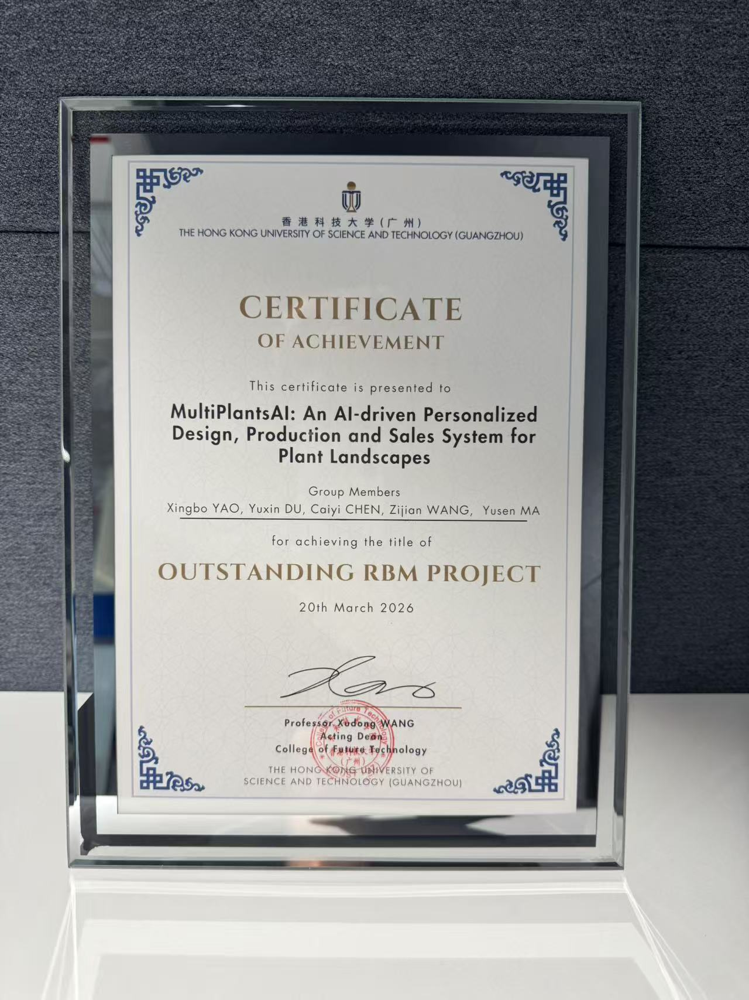

SegVol: Universal and interactive volumetric medical image segmentation
Y Du, F Bai, T Huang, B Zhao
Advances in Neural Information Processing Systems 37, 2025
Citations: 135
Embodied AI, spatial intelligence, and multimodal perception.
MPhil student at HKUST-GZ and admitted PhD student at Shanghai Jiao Tong University.
He studies how vision, language, and action can be integrated to support embodied systems that understand 3D environments and interact more effectively in the physical world.
Yuxin DU is an MPhil student at The Hong Kong University of Science and Technology (Guangzhou) and an admitted PhD student at Shanghai Jiao Tong University. His research centers on Embodied AI, with a broader interest in Spatial Intelligence, Computer Vision, and Multimodal Learning. He has worked on topics ranging from medical image analysis to vision-language-action modeling, and he is particularly interested in how perception, language, and action can be aligned for embodied systems. He aims to develop learning systems that reason about 3D environments more effectively and support robust interaction in real-world settings.
Representative papers selected from local source materials.
Y Du, F Bai, T Huang, B Zhao
Advances in Neural Information Processing Systems 37, 2025
Citations: 135

F Bai, Y Du, T Huang, MQH Meng, B Zhao
arXiv preprint, 2024
Citations: 185

T Lin, G Li, Y Zhong, Y Zou, Y Du, J Liu, E Gu, B Zhao
arXiv preprint, 2025
Citations: 32

Tao Lin, Yilei Zhong, Yuxin Du, Jingjing Zhang, Jiting Liu, Yinxinyu Chen, Encheng Gu, Ziyan Liu, Hongyi Cai, Yanwen Zou, Lixing Zou, Zhaoye Zhou, Gen Li, Bo Zhao
arXiv preprint, 2025
Citations: 8
Outstanding RBM Project 2026 (2nd rank out of 82 groups).

A current curriculum vitae is available as a PDF.
Email: yuxindu444@gmail.com
Google Scholar: Scholar profile
I welcome academic discussions and opportunities for research collaboration.